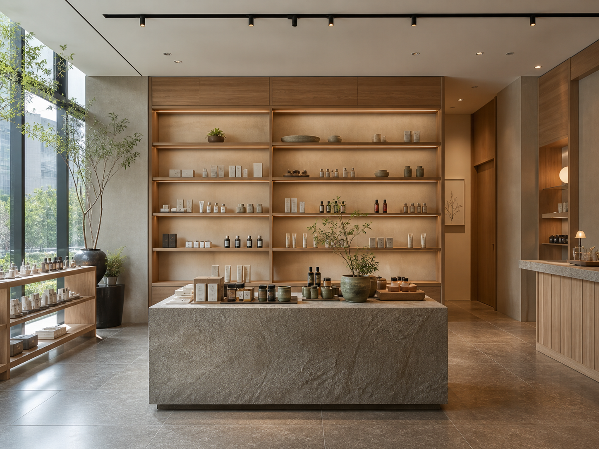
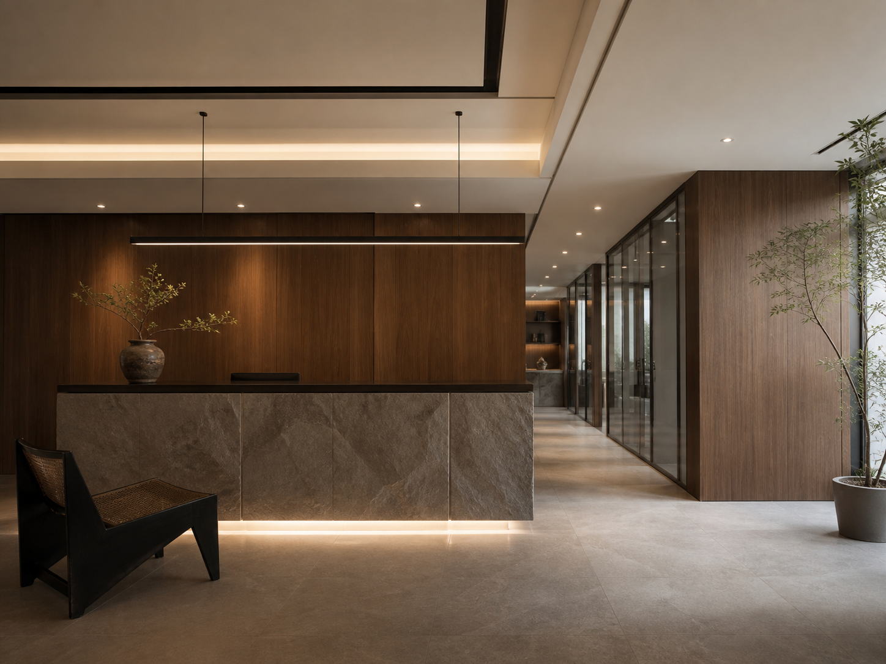
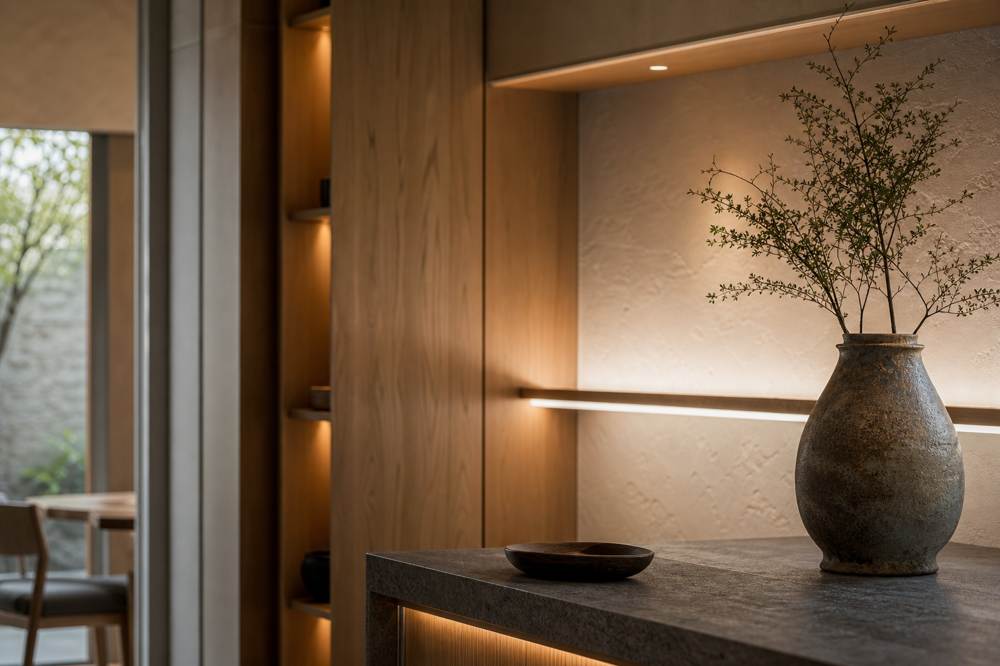
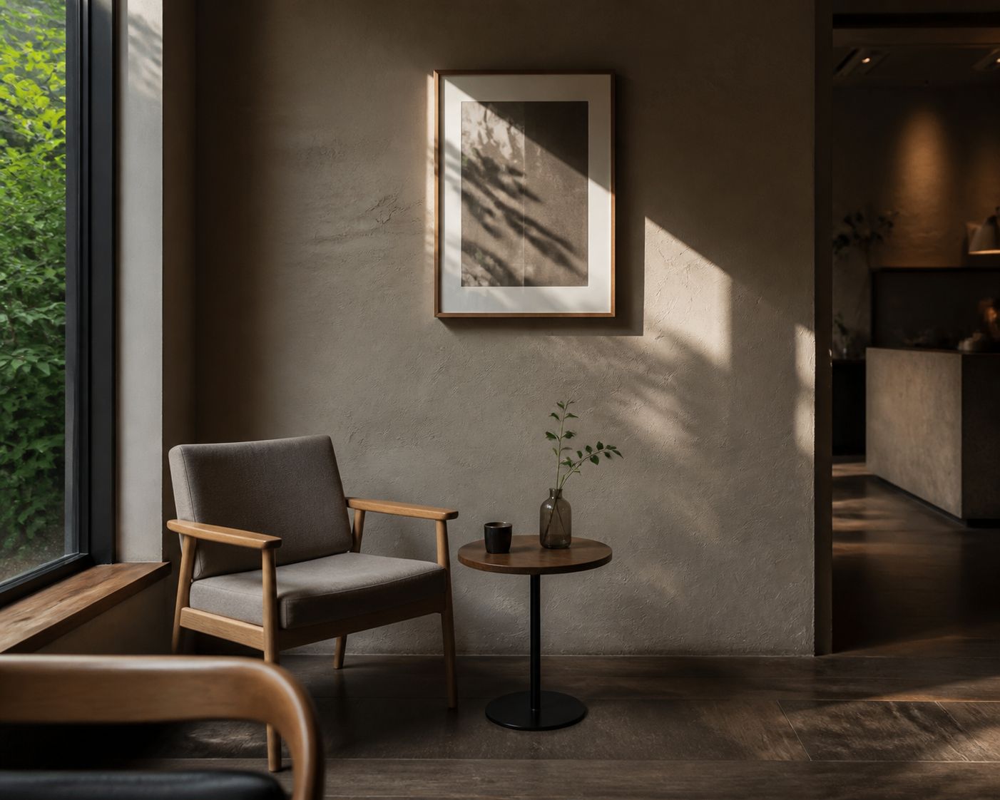
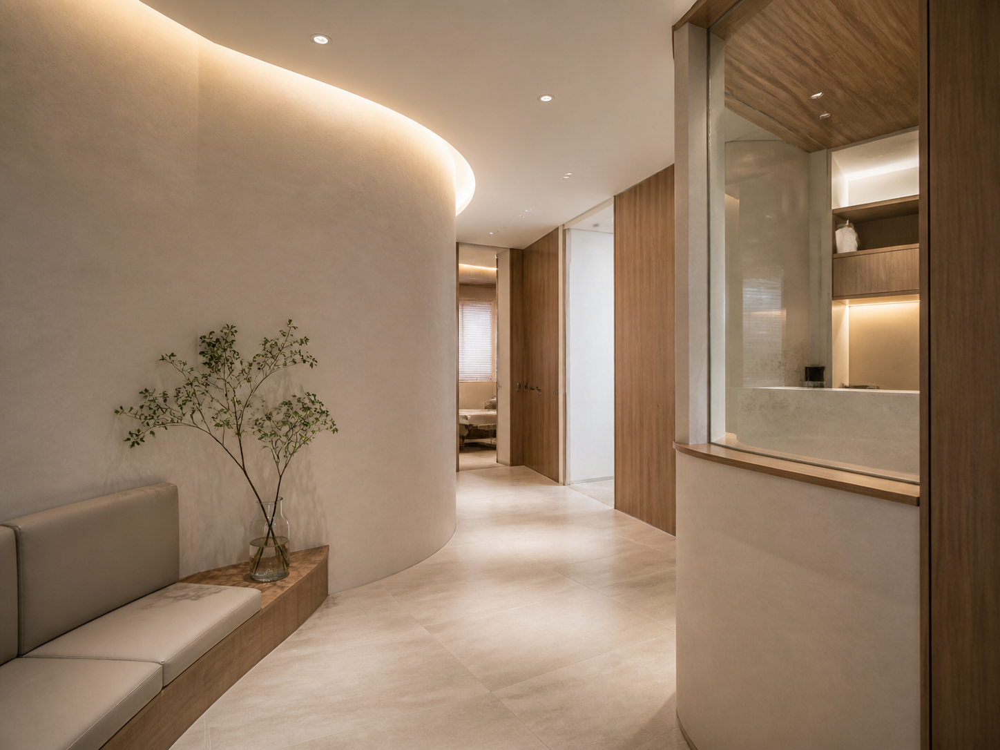
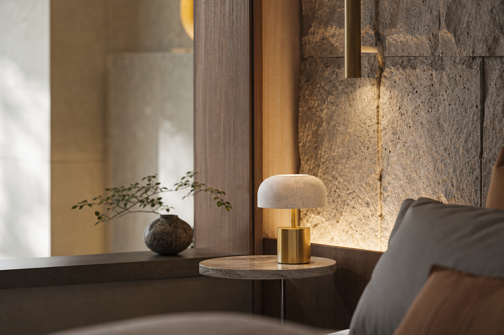
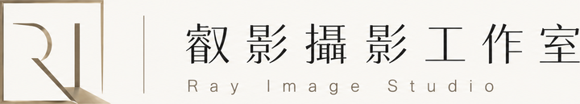

Commercial Space Works
商業空間・設計感攝影案例
為品牌店面、接待空間、展示場域與設計作品建立乾淨、端正且具質感的空間影像。
Selected Cases
品牌場域與設計空間
影像重點放在空間比例、線條秩序、材質層次與品牌氛圍，適合官網、作品集、提案與商業形象使用。







Commercial Space Works
為品牌店面、接待空間、展示場域與設計作品建立乾淨、端正且具質感的空間影像。
Selected Cases
影像重點放在空間比例、線條秩序、材質層次與品牌氛圍，適合官網、作品集、提案與商業形象使用。





